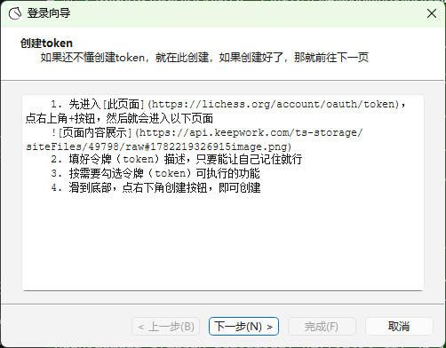
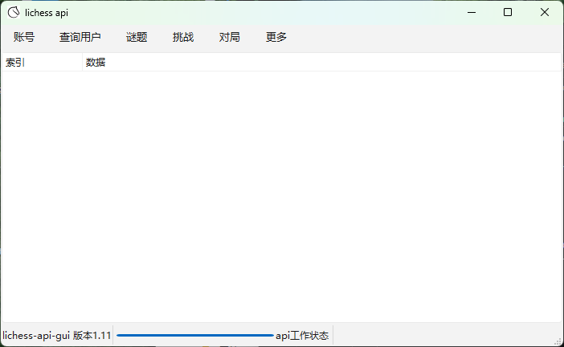

这里有些选项可以提供切换别的页面
依赖库具体信息
界面功能指引
更新日志
windows双击该项目根目录的bat文件即可运行 macos/linux双击该项目根目录的sh文件即可运行
| windows | macos/linux |
|---|---|
| run_main.bat | run_main.sh |
| run_play_chess.bat | run_play_chess.sh |
macos/linux用户在运行前需要额外添加执行权限
chmod +x run_main.sh
chmod +x run_play_chess.sh
在运行过程中，每一个向API发送请求的操作都要等待两三秒，这两三秒内，请不要动窗口，不然就会搞未响应
首先会弹出一个登录窗口，然后就把前文提到的token输入进去，再点下面登录按钮就能登录

